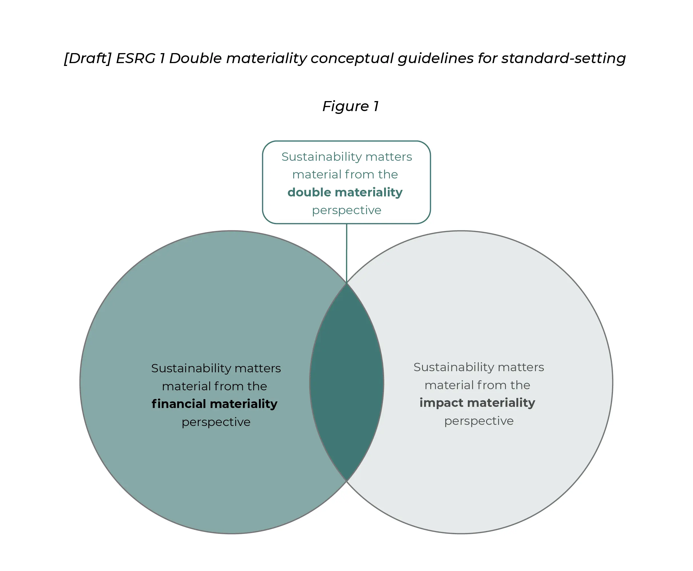

In today's global economic landscape, the emphasis on corporate transparency and accountability has gained immense importance. This growing significance has given rise to a new era of sustainability reporting standards, aimed at fostering responsible business practices and addressing environmental, social, and governance (ESG) concerns. Notably, two prominent standards poised to shape this evolving landscape are the International Financial Reporting Standards Foundation (IFRS) and the European Sustainability Reporting Standard (ESRS).
ESRS
The European Commission adopted the Corporate Sustainability Reporting Directive (CSRD) proposal in March 2021, which attempts to replace and expand the Non-Financial Reporting Directive (NFRD) and proposes numerous important reforms and upgrades. The Corporate Sustainability Reporting Directive (CSRD) came into force on January 5, 2023. This new directive upgrades and strengthens the regulations concerning the social and environmental information that companies must report the directive requires approximately 50,000 large companies and listed SMEs to report on sustainability. The new rules aim to provide investors with access to information on climate change risks, create transparency about company impact, and reduce reporting costs.
The implementation of the CSRD will be staged, with the first companies expected to apply the new reporting rules in the 2024 fiscal year, and the reports will be published in 2025. Companies subject to the CSRD must report using European Sustainability Reporting Standards (ESRS), developed by the European Financial Reporting Advisory Group (EFRAG), an independent body involving various stakeholders. These standards will be tailored to EU policies and contribute to international standardization initiatives.
EFRAG has published twelve first sets of draft standards which include two cross-cutting standards and ten topical standards.
| General | Environment | Social | Governance |
|---|---|---|---|
|
ESRS 1 General requirements ESRS 2 General disclosures |
ESRS E1 Climate change ESRS E2 Pollution ESRS E3 Water and marine resources ESRS E4 Biodiversity and Ecosystems ESRS E5 Resource use and circular economy |
ESRS S1 Own workforce ESRS S2 Workers in the value chain ESRS S3 Affected communities ESRS S4 Consumers and end users |
ESRS G1 Business Conduct |
The current set of draft standards only includes cross-cutting and sector-agnostic standards. Sector-specific and SME-proportionate standards are still being developed and will be submitted for a separate public consultation.
IFRS
The International Financial Reporting Standards Foundation (IFRS) has taken a major step towards creating a worldwide sustainability reporting standard in response to the rising significance of sustainability reporting. This initiative has led to the creation of the International Sustainability Standards Board (ISSB), which aims to provide a consistent and comprehensive framework for disclosing environmental, social, and governance (ESG) information. The ISSB was established in 2021 and is an independent standard-setting board responsible for developing internationally accepted sustainability reporting standards. Through various stakeholder engagement and collaboration, the ISSB strives to create a reporting landscape that meets the evolving needs of investors, companies, and society at large. The Standards will help to increase trust and confidence in corporate sustainability disclosures to guide investment choices.
ISSB published its first two standards on June 26th, 2023, IFRS S1 and IFRS S2. IFRS S1 provides a set of disclosure standards to enable businesses to communicate with investors about the sustainability-related risks and opportunities they face in the short, medium, and long term. IFRS S2 specifies specific climate-related disclosures and is intended to be used with IFRS S1. IFRS S1 and S2 will be implemented for annual reporting periods beginning on January 1, 2024. This indicates that investors will be able to access information in 2025 if a corporation applies the rules to its 2024 accounting cycle.
Significant overlaps between ESRS & IFRS:
-
ESRS and IFRS standards both align with the existing standards
- Climate Disclosure Standards Board (CDSB)
- Task Force for Climate-related Financial Disclosures (TCFD)
- Integrated Reporting Framework
- Sustainability Accounting Standards Board (SASB)
- World Economic Forum's Stakeholder Capitalism Metrics
-
The context of climate-related disclosure remains consistent
- General requirements: Both standards emphasize the importance of disclosing the effects of significant climate-related risks and opportunities on a company's overall strategy and decision-making processes.
- Climate-related remuneration and materiality assessment
- Policies, targets, action plans, and resources
- Performance measurement
-
Enhanced GHG emissions reporting:
- Scope 1 emissions under EU ETS
- Scope 2 emissions in market-based and location-based
- Scope 3 calculations and presentation requirements
- Differences between removals, offsets, and avoided emissions are discussed
- GHG intensity per revenue required by SFDR
- Distinction of three levels of targets: general climate-related targets, GHG emission reduction targets, net-zero targets, and other neutrality claims
- Additionally, ESRS also takes into consideration EU taxonomy-alignment ratios, energy consumption and mix, and energy intensity per revenue required by SFDR.
-
Identifying sustainability risks, opportunities, and disclosures
IFRS standards help businesses and investors to standardise on a worldwide baseline of sustainability disclosures for capital markets, offering interoperability with jurisdiction-specific disclosures and addressing the expectations of a larger stakeholder group. IFRS S1 and S2 align with existing standards to streamline sustainability disclosures:
This alignment benefits companies and investors by reducing the complexity of disclosures.
According to a recent IFRS update, when the ISSB Standards begin to be enforced around the world in 2024, the IFRS Foundation will take over duties from the TCFD, which is monitoring progress toward climate-related disclosures against the recommendations since they were published.
ESRS has also aligned with TCFD and the Global Reporting Initiative (GRI). GRI supports the ESRS as a significant milestone in implementing the Corporate Sustainability Reporting Directive (CSRD) for companies operating in the EU market responsible for their impacts. GRI took an active role in the preparation of the ESRS, from the initial stages led by the Project Task Force through the collaboration with the EFRAG Sustainability Reporting Board (SRB) and Technical Expert Group. The work focused on ensuring optimum interoperability between the global GRI Standards, focusing on impact materiality, and double materiality.
TCFD requirements can be found in ESRS 2 General disclosures and ESRS E1 Climate change. Some of the key findings that have been noted from TCFD recommendation & ESRS reconciliation tables:
| TCFD Disclosure Requirements | ESRS Standards |
|---|---|
| Governance | ESRS 2 (Gov 1-3) and ESRS E1 |
| Strategy | ESRS 1, ESRS 2, and ESRS E1-4 |
| Risk management | ESRS E1 and ESRS E2 |
| Metrics and targets | ESRS 2 and ESRS E1 |
Both ISSB's IFRS S2 and ESRS E1 standards share key elements in the context of climate-related disclosures. These common elements include:
The ESRS goes beyond the IFRS by providing additional detail and granularity, such as clearer reference to alignment with limiting global warming to 1.5°C.
Both IFRS and ESRS provide disclosure requirements to cover how sustainability matters are addressed at the strategic level. IFRS S1 outlines disclosure requirements for an entity's sustainability-related risks and opportunities, including governance processes, strategy, risk identification, prioritization, and monitoring. It also outlines the performance of these risks and opportunities, including progress towards legal or regulatory targets.
ESRS requests for information about the reporting undertaking that is included in the sustainability statements must also cover the material impacts, risks, and opportunities connected to the undertaking through its upstream, downstream, and direct and indirect business relationships. Impacts include those caused or contributed to by the undertaking and those that are directly connected to the undertaking's own operations, products, or services through its business relationships.
Key Differences
-
Focus on materiality assessment
-
Regulatory status and influence on national legislation
The key difference is in the materiality approach - ISSB focuses on financial materiality, while ESRS employs double materiality, considering financial impacts on the company and consequences of sustainability concerns on society and the environment. Double materiality captures a holistic view of sustainability impacts, encompassing financial and non-financial aspects.

Both the CSRD and ISSB aim to enhance sustainability reporting, but the key difference is that ESRS is a mandatory standard within the EU, influencing national legislation, while ISSB standards are voluntary and intended for global adoption, with a less direct impact on national laws.
Reconciliation of IFRS & ESRS to achieve interoperability between standards
EFRAG recommends supporting the International Sustainability Standards Board (ISSB) to reduce regulatory fragmentation and ensure the convergence of global sustainability reporting standards. By integrating global baseline standards developed by ISSB, European standards can reduce inconsistent reporting requirements for global undertakings. The CSRD text also foresees European standards contributing to the convergence of sustainability reporting standards at the global level, ensuring consistency with the EU's legal framework and European leaf Deal objectives.
The ISSB also acknowledges the importance of regional standards like the ESRS and the need for a globally consistent approach to sustainability reporting. ESRS also agreed that additional work on interoperability mapping will be done when the ISSB finalises the drafts. Since the IFRS published its drafts on June 26, 2023, the outcome and details of alignment between ISSB's standards and the ESRS are still to be determined through further consultations and deliberations.